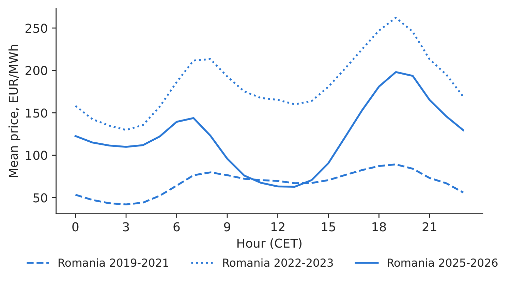
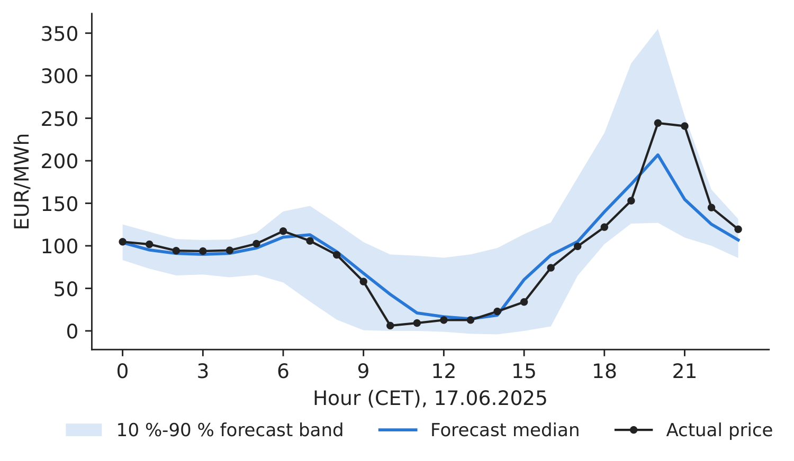
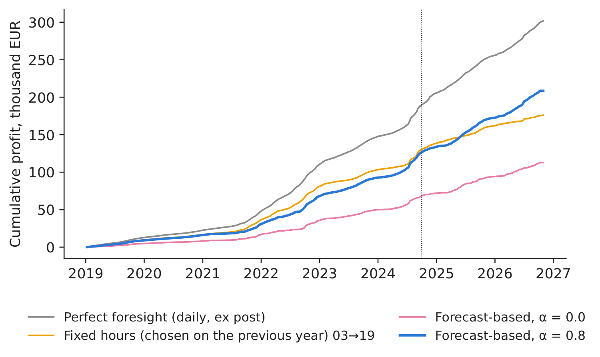
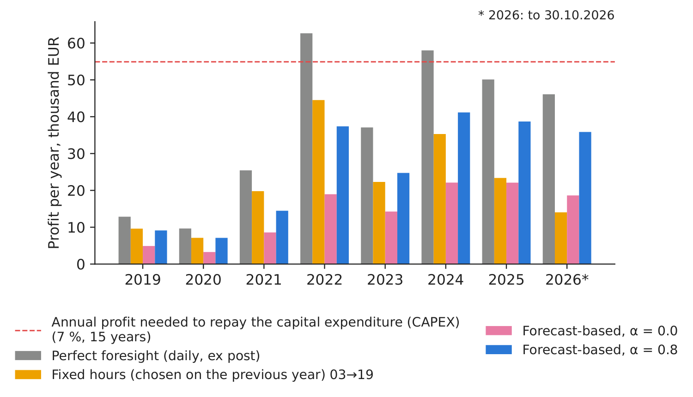

Case study 6 · Lecture 6
Probabilistic forecasts and the value of battery arbitrage on the day-ahead market
Prof. dr. Daniel Traian PELE
Bucharest University of Economic Studies, Department of Statistics and Econometrics
Romanian Academy, Institute for Economic Forecasting
The paper
Andrei, A.-V., Cepoi, C. O., Dumitrescu, B. A., Lessmann, S., Chiriac (Luchian), A.-C., Pele, D. T. & Petukhina, A. (2026). Joint probabilistic forecasting for battery arbitrage in day-ahead power markets. SSRN (Social Science Research Network) Working Paper 6872381. doi:10.2139/ssrn.6872381
Materials
The business question
A Romanian producer with a solar park is offered a battery energy storage system (BESS). The vendor's slide shows the profit a battery could have made in 2022. The investment committee must decide: how much does a battery really earn from buying cheap and selling dear on the day-ahead market (PZU, Piața pentru Ziua Următoare, the Romanian day-ahead market), when it must bid a day ahead without knowing tomorrow's prices — and does that repay the investment? The trading desk asks a second question: which hours should the battery bid, and at what prices?
What the paper did
Question. How much arbitrage value can be captured ex ante when storage is operated on probabilistic price forecasts, and does it justify the investment, in four interconnected Central and Eastern European (CEE) day-ahead markets (Sections 1 and 3)?
Data. Hourly day-ahead prices of Romania, Bulgaria, Hungary and the Czech Republic, January 2018 – September 2024 (59,160 hours per country), with 37 predictors: load, generation and their forecasts, lagged prices, Brent, TTF (Title Transfer Facility) and carbon prices, weather and calendar (Section 5.1). Battery: 1 MW / 1 MWh, efficiency 90 %, CAPEX (capital expenditure) 500,000 EUR, 15 years, 7 % discount rate, at most one cycle per day (Section 4).
Method. Distributional Random Forests (DRF) forecast the joint distribution of the 96 next-day prices (24 hours \(\times\) 4 countries), refitted on the last 365 days every 30 days. A quantile-based (QB) rule chooses the buy hour and the sell hour from the forecast medians and places limit bids at forecast quantiles; benchmarks are a fixed pair of hours (NH) and daily perfect foresight (PF-Daily).
Main findings of the paper.
- “At \(\alpha=0.8\), QB beats NH in cumulative profit in all four markets, with relative gains of approximately 13 % in Czechia … and 7 % in Romania” (Section 6.2). Romania, January 2019 – September 2024: QB \(\alpha=0.8\) 142,671 EUR, NH 133,230 EUR, PF-Daily 188,249 EUR; payback 20.1 years for QB (Table “single country strategy, RO, Romania”).
- “Under the baseline CAPEX of 500 thousand EUR, none of the strategies is able to cover investment costs” (Section 6.2); break-even CAPEX lies between 48 % and 75 % of the baseline for the QB rule (Section 6.2).
- Joint cross-border dispatch adds about 5 % to QB profit (149.9k vs 142.7k EUR for Romania) and 18 % under perfect foresight, “driven by persistent regional price differences” (Abstract; Table “Multi-zone joint-dispatch”).
- DRF accuracy for Romania: MAE (mean absolute error) 39.63, RMSE (root mean squared error) 49.60, CRPS (continuous ranked probability score) 28.12 EUR/MWh over 70 rolling windows (Table “DRF forecasting performance”).
Related work of our group for Lecture 6: Basangova, Bolovăneanu, Conda, Pele et al. (2026), Day-ahead forecasting for redispatch measures using machine learning models, SSRN (Social Science Research Network) 7511080, doi:10.2139/ssrn.7511080 — neural networks (NBEATSx, NHiTS, Neural Hierarchical Interpolation for Time Series, TFT, Temporal Fusion Transformer) forecast German redispatch volumes one day ahead better than earlier-generation models (Abstract; Table 4).
The method, step by step
Intuition first
A battery earns the spread between a cheap hour and an expensive hour, minus the 10 % lost in charging and discharging. Looking back, the best two hours are obvious; looking forward, they are a guess. A probabilistic forecast says not only “the price at 19:00 will be about 150” but “with 80 % probability between 110 and 210” — which tells the trader how aggressively to bid.
Let \(p_{d,h}\) be the day-ahead price of hour \(h\) on day \(d\) and \(\eta=0.9\) the efficiency. Buying 1 MWh in hour \(h_1\) and selling in hour \(h_2>h_1\) earns \(\pi_d=\eta\,p_{d,h_2}-p_{d,h_1}/\eta\). Perfect foresight takes the best pair each day (an upper bound); fixed hours use one pair, chosen ex ante as the best pair on average over the previous year (the 365 days before 8 January 2019 for the 2019–2024 window, the year 2024 for 2025–2026), and trade every day. The random forest gives each past day \(i\) a weight \(w_i(\mathbf x_d)\) — the share of trees in which day \(i\) falls in the same leaf as tomorrow's conditions \(\mathbf x_d\) — so the forecast is a whole distribution of 24-hour price vectors, and its quantiles \(\hat Q_{\tau,d,h}\) are weighted quantiles. The forecast-based rule picks \(h_1<h_2\) maximising \(\eta\hat Q_{0.5,d,h_2}-\hat Q_{0.5,d,h_1}/\eta\), trades only if this is positive, and bids to buy at \(\hat Q_{1-q,d,h_1}\) and to sell at \(\hat Q_{q,d,h_2}\), with \(q=(1-\alpha)/2\): a larger \(\alpha\) means safer bids that clear more often. Investment: annual profit \(\bar\pi_{ann}=365\,\bar\pi_d\), \(\mathrm{NPV}=-\mathrm{CAPEX}+\sum_{t=1}^{15}\bar\pi_{ann}/1.07^t\), payback \(=\mathrm{CAPEX}/\bar\pi_{ann}\). Forecast quality: CRPS (continuous ranked probability score) \(=\sum_iw_i|y_i-y|-\tfrac12\sum_{i,k}w_iw_k|y_i-y_k|\), in EUR/MWh; lower is better.
In practice
Value the battery on what a forecast-driven strategy earns, never on perfect foresight. Then compare the annual profit with the 54,897 EUR per year needed to repay 500,000 EUR in 15 years at 7 %.
Replicate it yourself
Notebook C6_notebook_EN.ipynb: hourly day-ahead prices of RO, BG (Bulgaria) and HU (energy-charts.info), CET (Central European Time) hours; the paper's test window 8 January 2019 – 30 September 2024 (2,087 days) and an extension to October 2026.
Classroom implementation: a standard random forest with leaf weights instead of DRF; only lagged prices and calendar as predictors; no Czech data; a simplified battery state (empty/full) instead of the paper's three-level rule.

Figure 1. Mean hourly price shape in Romania, three periods.
Source: energy-charts.info; 2019–Oct 2026.

Figure 2. A probabilistic forecast of tomorrow's 24 prices.
Source: our random forest; energy-charts.info.
Forecast quality. Over the paper's window our forest has MAE 26.50, RMSE 48.46 and CRPS 19.71 EUR/MWh (paper's DRF: 39.63, 49.60, 28.12 — different predictors and averaging), and its 10 %–90 % band covers 80.9 % of hours (target 80 %). Note: the naive “same hour yesterday” has MAE 25.59, so our point forecast adds little; its value is in the distribution, which sets the bids.
Table 1. Battery strategies in Romania, 1 MW / 1 MWh, 8 Jan 2019 – 30 Sep 2024, and annual profit in 2025–Oct 2026. Best realistic or overall value in bold.
| Strategy (1 MW / 1 MWh, Romania) | Profit 2019–2024, EUR | EUR/year | NPV (net present value), EUR | Payback, yrs | Both bids, % | EUR/year 2025–2026 |
|---|---|---|---|---|---|---|
| Perfect foresight (daily, ex post) | 189,816 | 33,197 | \(-\)197,642 | 15.1 | – | 52,717 |
| Fixed hours (chosen on the previous year) 03\(\rightarrow\)19 | 130,324 | 22,793 | \(-\)292,406 | 21.9 | – | 39,447 |
| Forecast-based, \(\alpha\) = 0.0 | 68,333 | 11,951 | \(-\)391,152 | 41.8 | 15.4 | 22,317 |
| Forecast-based, \(\alpha\) = 0.4 | 103,163 | 18,042 | \(-\)335,672 | 27.7 | 43.1 | 32,757 |
| Forecast-based, \(\alpha\) = 0.8 | 126,569 | 22,136 | \(-\)298,388 | 22.6 | 76.0 | 40,858 |
Source: our computation; CAPEX 500,000 EUR, 15 years, 7 %. Paper (RO, same window): PF-Daily 188,249; NH 133,230; QB \(\alpha\)=0.8 142,671 EUR.

Figure 3. Cumulative profit by strategy; dotted: end of the paper's window.
Source: our computation; energy-charts.info, 2019–Oct 2026.

Figure 4. Profit per year vs the annual profit needed to repay the battery.
Source: our computation; 2026 = January–October.
What our data show. Our perfect-foresight profit, 189,816 EUR, and our fixed-hours profit, 130,324 EUR (hours 03:00\(\rightarrow\)19:00 CET), are close to the paper's 188,249 and 133,230 EUR. Our forecast-based rule with \(\alpha=0.8\) earns 126,569 EUR (\(-\)2.9 % vs fixed hours), below the paper's 142,671: with only past prices as predictors, our forecasts cannot beat the fixed schedule, whereas the paper's DRF with fundamentals beats it by 7 %. Safe bids matter: \(\alpha=0\) earns only 68,333 EUR, because aggressive bids rarely clear (both bids accepted on 76.0 % of days at \(\alpha=0.8\)). Cross-border, the best of the RO/BG/HU routes adds 10.7 % to the perfect-foresight profit; the most frequent cross-border route is BG\(\rightarrow\)RO. Decision number: 2019–2024, the realistic strategy earned 22,136 EUR/year against 54,897 needed (NPV \(-\)298,388 EUR, payback 22.6 years) — not viable, as in the paper. In 2025–2026, with deeper solar middays (the fixed pair chosen on 2024 is 12:00\(\rightarrow\)19:00), it earns 40,858 EUR/year (payback 12.2 years): closer, but still below the threshold without balancing or capacity revenues.
Discussion questions for managers
- The vendor shows the perfect-foresight profit. By how much would you discount it, and why?
- The fixed pair chosen on the previous year moved from night\(\rightarrow\)evening to midday\(\rightarrow\)evening. What does that tell you about the value of co-locating a battery with your solar park?
- Which other revenues (balancing, frequency reserves, capacity payments, grid-fee savings) would you add to close the gap, and how certain are they?
- Why do safer bids (\(\alpha=0.8\)) earn more than aggressive ones? What does this say about trading on point forecasts?
- At what CAPEX would the battery be viable on 2025–2026 prices? Is that a realistic price trend?
Limitations of the classroom replication
(i) We leave out cross-border fees, congestion, intraday and balancing markets, and price impact. (ii) One cycle per day and 1 MWh: real projects use 2–4 hour batteries and several revenue streams. (iii) Perfect foresight is chosen ex post and is an upper bound; the fixed hours (chosen on the previous year) and the forecast-based rule are achievable. (iv) No degradation cost and no grid tariffs (a few lei/MWh in Romania). (v) Our forecasts use no fundamentals; the paper's DRF uses 37 predictors.
Case 6 at a glance
- QuestionDoes day-ahead arbitrage repay a 1 MW / 1 MWh battery when bids are set a day ahead?
- DataHourly RO, BG, HU prices, 2019–Oct 2026; paper's window 2019–Sep 2024.
- MethodRandom-forest probabilistic forecasts; quantile bids; fixed hours and perfect foresight as benchmarks; NPV.
- ResultRealistic: 22,136 EUR/yr (2019–2024), 40,858 (2025–2026); needed 54,897.
- DecisionNot viable on arbitrage alone at 500k EUR CAPEX; stack revenues or wait for cheaper batteries.

Source: our computation on energy-charts.info prices, 2019–Oct 2026.
Abbreviations
| BESS | battery energy storage system |
|---|---|
| BG | Bulgaria |
| CAPEX | capital expenditure |
| CEE | Central and Eastern Europe |
| CET | Central European Time |
| CRPS | continuous ranked probability score |
| DRF | Distributional Random Forests |
| HU | Hungary |
| MAE | mean absolute error |
| NH | naive fixed pair of hours |
| NHiTS | Neural Hierarchical Interpolation for Time Series |
| NPV | net present value |
| PZU | Piața pentru Ziua Următoare, the Romanian day-ahead market |
| QB | quantile-based |
| RMSE | root mean squared error |
| RO | Romania |
| SSRN | Social Science Research Network |
| TFT | Temporal Fusion Transformer |
| TTF | Title Transfer Facility |
The text, numbers, charts and tables of this page are those of the case brief; every number is computed by the case notebook on the course data.